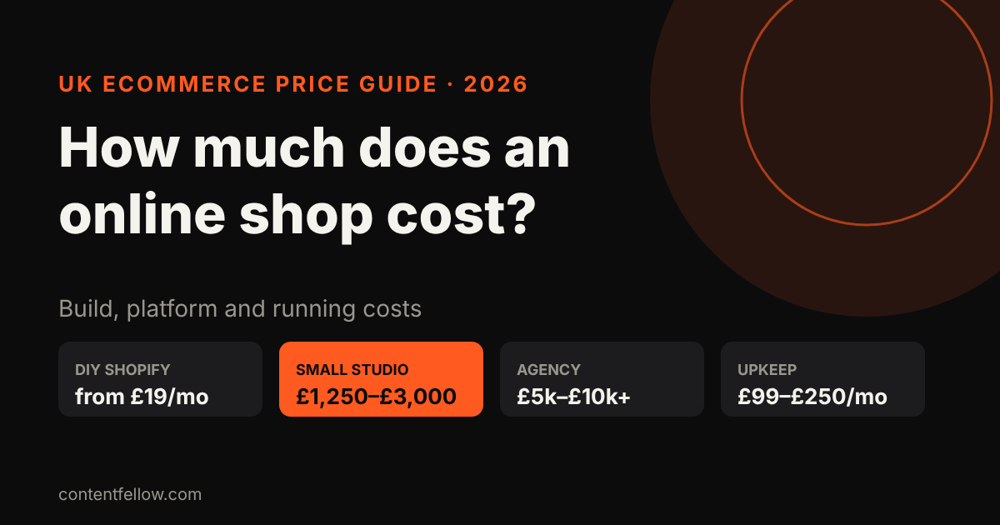
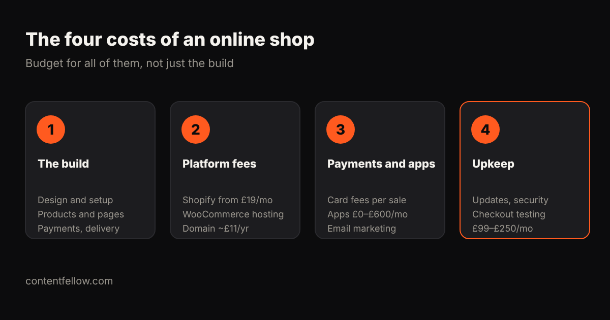

How Much Does an Online Shop Website Cost in the UK? (2026)
Quick answer: A UK online shop costs about £19 to £300 a month if you build it yourself on Shopify or similar, £1,250 to £3,000 for a small-studio build, and £5,000 to £10,000+ with an agency. On top of the build, budget for platform fees, card fees on each sale, apps, and £99 to £250 a month for upkeep if someone else maintains it. (UK prices, October 2026.)

How much does it cost to build an online shop?
| Route | Upfront | Monthly | Best for |
|---|---|---|---|
| DIY on Shopify Basic | £0 | £19–£25 + apps | Small catalogue, you have time |
| Budget package | £1,249+ | hosting extra | Simple shop with bookings or a few products |
| ContentFellow Shop | £1,499 | care from £49 | Up to 100 products, payments and delivery set up for you |
| Freelancer | £2,000–£5,000 | £30–£150 | Custom design, single developer |
| Small/medium agency | £5,000–£10,000 | £150–£250+ | Larger catalogues, integrations |
| Large custom build | £10,000–£30,000 | £500+ | Big ranges, complex logistics |
Sources: Shopify's UK plans start at £19 a month (Basic, billed annually) or £25 monthly, with Grow at £49–£65 (Charle). GoDaddy's UK guide puts small-to-medium agency ecommerce builds at £5,000–£10,000. Juggernaut Tech sells a booking or shop package from £1,249.

What are the ongoing costs of an online shop?
- Platform fees: Shopify from £19 a month; WooCommerce needs paid hosting instead.
- Payment fees: a percentage of every sale, which often costs more than the subscription once you're selling regularly.
- Apps: reviews, email marketing, upsells. UK stores often spend £150 to £600 a month on apps once they grow, but you can start on free ones.
- Domain: about £11 a year.
- Maintenance: £99 to £250 a month if someone tests updates and checkout for you.
How do you keep costs down?
- Start with a tight range of best-sellers, not your whole catalogue.
- Use the platform's built-in features before paying for apps.
- Pay a fixed price for the build, not an hourly rate.
- Pick a provider who also maintains the shop, so updates don't break your checkout.
ContentFellow online shop package
Our Shop build is £1,499 one-off: up to 100 products, card payments, delivery rules, product structured data for Google, and stock and order emails. Half to start, half at launch. After launch, choose Care at £49 or Care Plus at £159 a month.
Frequently asked questions
How much does a small online shop cost in the UK?
A DIY Shopify shop costs from £19 to £25 a month. A professionally built small shop usually costs £1,250 to £3,000 from a small studio, or £5,000 to £10,000 from an agency.
Is Shopify cheaper than a custom online shop?
Upfront, yes. But Shopify has monthly fees, payment fees and app costs, so compare the total over two or three years.
How much are payment fees for an online shop?
Every card payment carries a percentage fee set by your payment provider and plan. On a busy shop, these fees usually exceed the platform subscription.
How long does it take to build an online shop?
A small shop with up to 100 products usually takes 2 to 4 weeks once products and photos are ready.
Do I need maintenance for an online shop?
Yes. Plugins, payment apps and themes update often, and a broken checkout costs sales. UK maintenance for small shops is typically £99 to £250 a month.
Sources: Charle Shopify UK pricing guide, RVS Media, GoDaddy UK website cost guide, Juggernaut Tech, WebPulse Lab (2026). Last updated 17 October 2026.